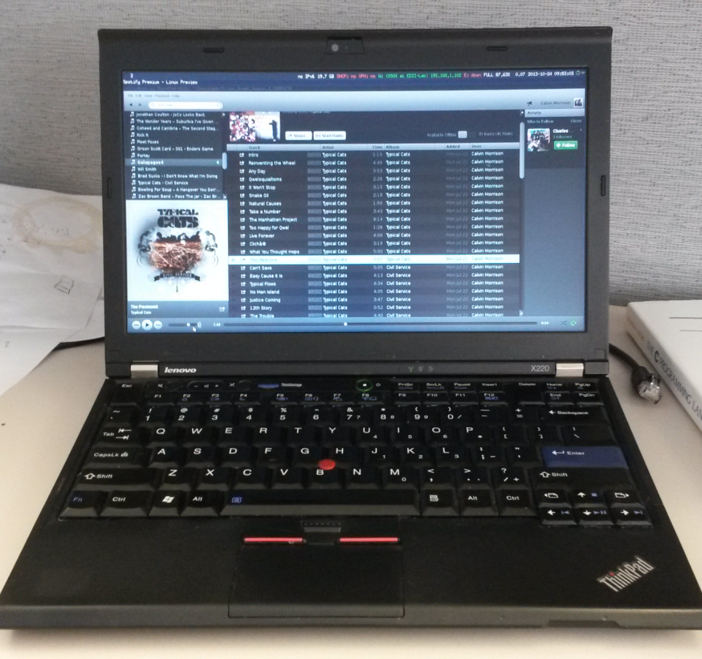
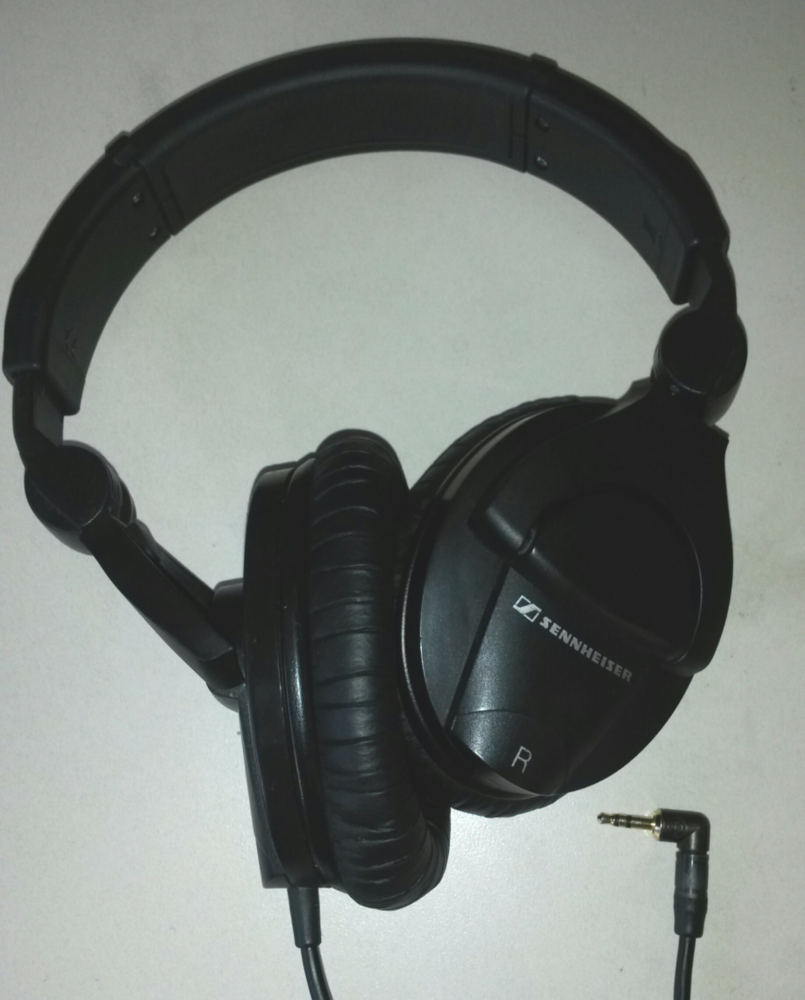

My Mobile Battle Station
I have a Lenovo Thinkpad X220, equipped with 4gb of ram, a Intel i5 processor, and extended battery. With the extended battery, and using linux I can get upwords of 9 hours of usage, even more if i'm avoiding the internet.

Headphones
I have a trusty pair of Sennheiser HD-280's that have lasted me for years. For $99.00 I would not recommend any other pair of headphones.

If you look at the 3.5mm jack I have modified mine using a Neutrik jack with a 90' angle. After my original jack wore out, I needed an upgrade and found that an angled option works best for usage with laptops, phones, and other devices.